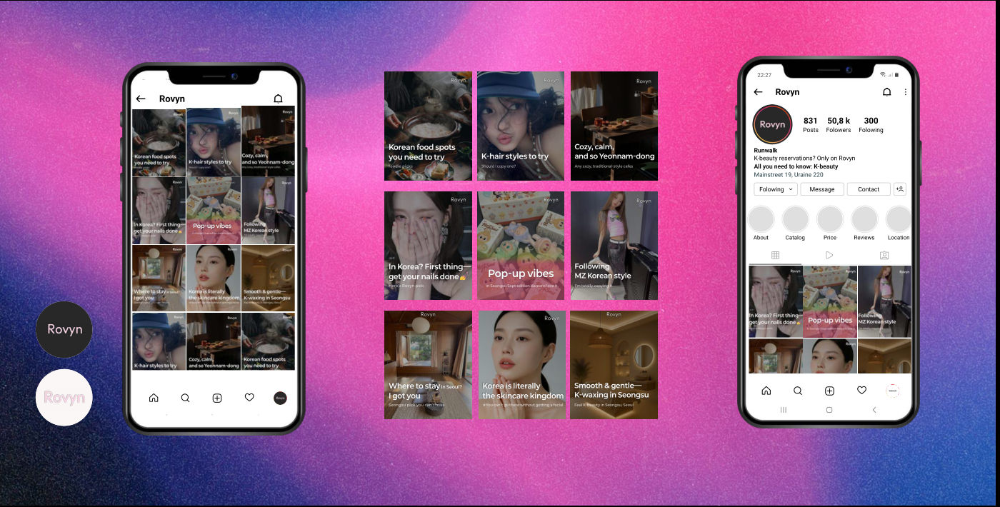

외국인 대상 K-뷰티 예약 플랫폼의 인스타그램을 리브랜딩해 광고 없이 조회수 1만 회, 하루 DM 예약 문의 30건을 만들었습니다.
역할
기획부터 디렉팅까지
브랜드
Rovyn (K-뷰티 예약 중개)
타깃
한국 여행 중인 20대 외국인 여성
역할
- 1트렌드 분석관광 데이터로 외국인이 궁금해하는 현지 트렌드 추출
- 2콘텐츠 전략예약 창구 역할의 카드뉴스 구성
- 3디자인 디렉팅핀터레스트 감성 High-teen, Y2K 무드
성과
- 10K+광고 없이 오가닉 게시물 조회수
- 30건+하루 평균 DM 예약 문의
- 세일즈 채널홍보 채널에서 핵심 판매 채널로 전환
문제와 해결
문제콘텐츠 해결
- 언어 장벽과 복잡한 예약 때문에 로컬 샵 접근이 어려움시술 과정, 가격표, 예약 방법을 카드뉴스로
- 정보만 주는 채널에 머물러 있음예약과 결제가 일어나는 중개 플랫폼으로 포지셔닝
- 정형화된 홍보 이미지‘한국인이 가는 찐 핫플’ 같은 현지 트렌드 콘텐츠
작업물
